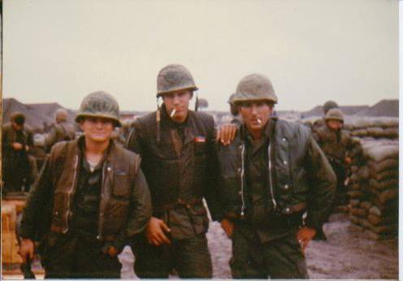
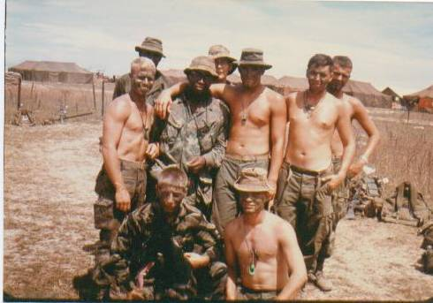

Max O'Canas Gallery
Alpha Company 1968
 (1) L-R: unk, unk, Doc Tobin, Reuben McGinnes, Joe Colleluore, Max O'Canas
(1) L-R: unk, unk, Doc Tobin, Reuben McGinnes, Joe Colleluore, Max O'Canas

 (3) L-R : Jim Price , Joe Wrigley
(3) L-R : Jim Price , Joe Wrigley
 (4) L-R : Mel Diaz , Sgt. Norman Karkos
(4) L-R : Mel Diaz , Sgt. Norman Karkos

 (6) Softball Time!
(6) Softball Time!
 (7) Bob "Doc" Sutherland
(7) Bob "Doc" Sutherland